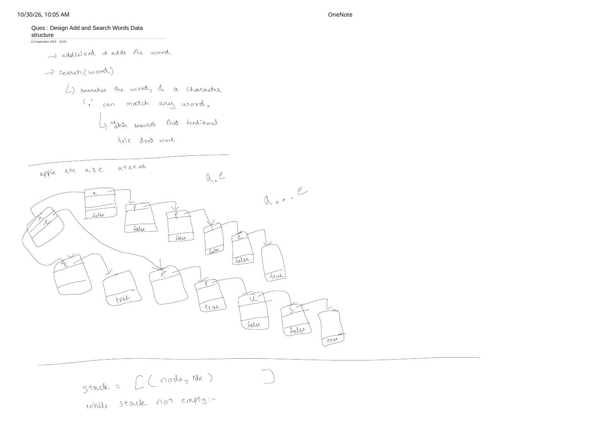
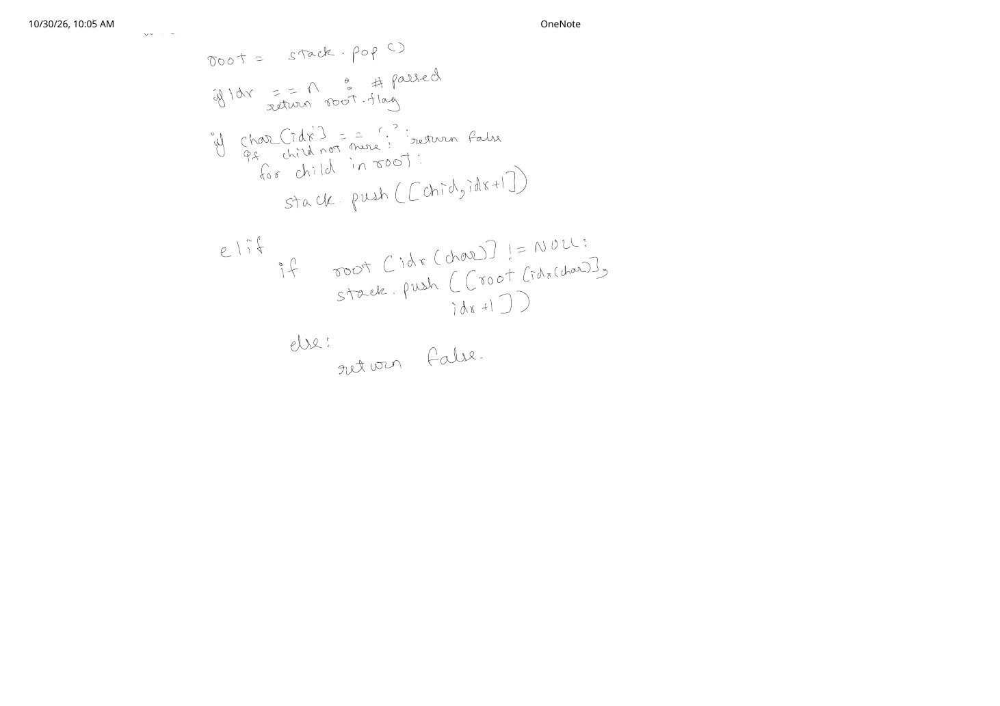
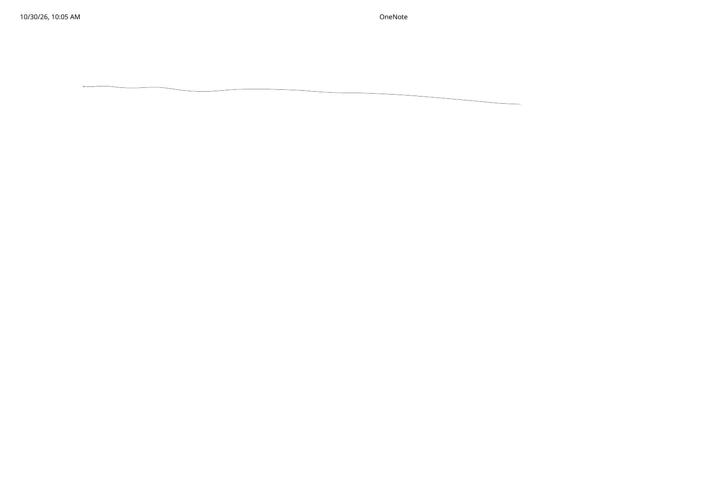

Design Add and Search Words Data Structure (LeetCode 211)
Expanded from handwritten competitive coding study note: 02_Ques_Design_Add_and_Search_Words_Data_structure.pdf
In a standard Trie, search(word) follows at most one deterministic edge at every character position. LeetCode 211 (Design Add and Search Words Data Structure) introduces a single-character wildcard '.' that can match any lowercase letter—meaning a single query like "a.e" or "a...e" can fan out across up to $26$ child subtrees simultaneously. This note expands the handwritten pointer tree on {"apple", "ate", "axe", "aterus"} and refines the explicit stack DFS sketched in the notebook into a bug-free iterative and recursive solution.
1. Problem Statement & Why Linear Trie Traversal Breaks
LeetCode 211 — WordDictionary Operations
WordDictionary()— Initializes the dictionary object.void addWord(word)— Adds a lowercase stringwordto the data structure.bool search(word)— Returnstrueif any added string matchesword, wherewordmay contain dots'.'and each'.'matches any single letter'a'–'z'.
As noted at the top of Page 1: "'.' can match any character $\implies$ this ensures that a traditional single-pointer Trie traversal doesn't work." Nor does a plain unordered_set<string> work, because you cannot compute the hash of "a...e" without enumerating up to $26^3 = 17{,}576$ concrete strings!
2. Progression: Length Buckets vs. Wildcard Trie DFS
- Brute Force (List Scan): Store all added words in a vector; on
search(word), compare every stored word of equal length character by character. Time: $O(N \cdot L)$ per search—too slow when $N$ is large and queries have few or zero wildcards. - Better (Length-Bucketed Hash Map): Group words in
unordered_map<int, vector<string>>by length. Still degrades to $O(N \cdot L)$ when most inserted words share the same length! - Optimal (26-Way Trie + Backtracking / Stack DFS):
addWord(word)is 100% identical to Striver Lec 1 ($O(L)$ time).search(word)walks deterministically in $O(1)$ on exact characters, and branches only across actually populated children (not all 26 blind guesses!) wheneverword[idx] == '.'.
3. Handwritten Trie & Stack Trace on {apple, ate, axe, aterus}
Page 1 of the handwritten note inserts four words—"apple", "ate", "axe", and "aterus"—and tests queries "a.e" and "a...e":
idx = 1 ('.'), node 'a' pushes all three existing children—('p', 2), ('t', 2), and ('x', 2)—onto the search stack.Refining the Handwritten Stack Pseudocode (Critical Bug Fix!)
Pages 1–2 of the handwritten note model the search using an explicit stack stack = [(root, 0)]:
Why Dead-End Branches Must continue Instead of return False!
In the quick pseudocode on Page 2, two lines write if idx == n: return root.flag and else: return False inside the while stack not empty: loop. Look at what happens on search("a.e") if ('p', 2) happens to sit on top of the stack above ('t', 2) and ('x', 2):
(root, 0)sees'a'$\to$ pushes(node_a, 1).(node_a, 1)sees'.'$\to$ pushes(node_x, 2),(node_t, 2), and(node_p, 2).- Popping
(node_p, 2)checks for'e', seesnullptr(node_ponly has child'p'for"apple"!). If we executedreturn Falseright there, we would falsely reject"a.e"while valid matches"ate"and"axe"are still waiting on the stack! - Similarly, if
idx == nis reached on a prefix node withflag == false(e.g., searching"a.p"reaches"app"withflag == falsewhile another word"axp"hasflag == true), we must onlyreturn truewhencur->flag == true, and otherwisecontinue!
Rule: Return true as soon as any branch reaches idx == n with flag == true; return false only after the entire stack becomes empty!
Corrected Stack Dry Run on search("a.e")
- Init:
stack = [(root, 0)] - Step 1: Pop
(root, 0), match'a'$\to$stack = [(node_a, 1)]. - Step 2: Pop
(node_a, 1), see'.'$\to$ push non-null children:stack = [(node_p, 2), (node_t, 2), (node_x, 2)]. - Step 3: Pop
(node_x, 2), match'e'$\to$ push(node_xe, 3). - Step 4: Pop
(node_xe, 3):idx == 3 == word.size()andnode_xe->flag == true$\implies$ immediately returntrue! (Even ifnode_pwas popped first, its missing'e'child simply does nothing and the next iteration popsnode_t$\to$"ate"$\to$true!)
4. C++ & Python Implementations (Recursive + Explicit Stack)
Below are both the clean recursive backtracking DFS (most concise in interviews) and the corrected explicit-stack iterative DFS directly mirroring the handwritten note:
#include <bits/stdc++.h>
using namespace std;
class WordDictionary {
struct Node {
Node* links[26] = {nullptr};
bool flag = false;
};
Node* root;
bool dfs(int idx, const string& word, Node* node) const {
if (idx == (int)word.size()) {
return node->flag;
}
char ch = word[idx];
if (ch == '.') {
for (int c = 0; c < 26; c++) {
if (node->links[c] != nullptr && dfs(idx + 1, word, node->links[c])) {
return true;
}
}
return false;
}
Node* nxt = node->links[ch - 'a'];
return nxt != nullptr && dfs(idx + 1, word, nxt);
}
public:
WordDictionary() : root(new Node()) {}
void addWord(const string& word) {
Node* node = root;
for (char ch : word) {
int c = ch - 'a';
if (!node->links[c]) {
node->links[c] = new Node();
}
node = node->links[c];
}
node->flag = true;
}
// Approach A: Recursive Backtracking DFS
bool search(const string& word) const {
return dfs(0, word, root);
}
// Approach B: Explicit Iterative Stack (corrected from handwritten Page 2)
bool searchIterative(const string& word) const {
vector<pair<Node*, int>> st = {{root, 0}};
int n = (int)word.size();
while (!st.empty()) {
auto [cur, idx] = st.back();
st.pop_back();
if (idx == n) {
if (cur->flag) return true;
continue; // Other branches on stack may still end at flag == true!
}
if (word[idx] == '.') {
for (int c = 0; c < 26; c++) {
if (cur->links[c]) {
st.push_back({cur->links[c], idx + 1});
}
}
} else {
Node* nxt = cur->links[word[idx] - 'a'];
if (nxt) {
st.push_back({nxt, idx + 1});
}
// If nxt == nullptr, this branch dies quietly; loop continues!
}
}
return false;
}
};class WordDictionary:
def __init__(self):
# Dictionary-based Trie node; '$' marks terminal end-of-word
self.root = {}
def addWord(self, word: str) -> None:
node = self.root
for ch in word:
node = node.setdefault(ch, {})
node["$"] = True
def search(self, word: str) -> bool:
stack = [(self.root, 0)]
n = len(word)
while stack:
cur, idx = stack.pop()
if idx == n:
if "$" in cur:
return True
continue
ch = word[idx]
if ch == ".":
for key, child in cur.items():
if key != "$":
stack.append((child, idx + 1))
elif ch in cur:
stack.append((cur[ch], idx + 1))
return False5. Time & Space Complexity + Edge Cases
addWord(word): $O(L)$ time and at most $L$ newly allocated Trie nodes, where $L = |\text{word}| \le 25$.search(word):- No wildcards ($k = 0$ dots): Deterministic $O(L)$ time—identical to a standard Trie.
- With $k$ dots: Each
'.'branches up to $26$ ways, giving $O(26^k \cdot L)$ time (bounded above by $O(\text{total Trie nodes})$). In LeetCode 211, $k \le 2$, so $26^2 = 676$ max branches per query! - Auxiliary Search Space: $O(L)$ recursion call stack (or up to $O(26 \cdot L)$ pairs on the explicit iterative stack).
- Key Edge Cases:
- All-dot queries like
"...": Returnstrueiff any word of length $3$ (such as"ate"or"axe") was inserted; note that"apple"(length $5$) hasflag == falseat depth $3$ so"..."will correctly returnfalseif only"apple"is in the dictionary! - Prefix word inside a longer word (
"ate"inside"aterus"): Highlighted in the handwritten tree—"ate"setsflag = trueon an internal node that still has a child edge'r'leading to"aterus".
- All-dot queries like
From the Handwritten Notes
View original handwritten page — LeetCode 211 (Page 1: Wildcard Problem Note, {apple, ate, axe, aterus} Tree & Stack Setup)


'.' breaks linear Trie search, pointer diagram for apple, ate, axe, aterus with queries a.e and a...e, and initializing stack = [(node, idx)].View original handwritten page — LeetCode 211 (Page 2: Explicit Stack Pop & Wildcard Branching Pseudocode)


(child, idx + 1) across all children when char[idx] == '.' vs. advancing on an exact character match.View original handwritten page — LeetCode 211 (Page 3: Closing OneNote Section Rule)


02_Ques_Design_Add_and_Search_Words_Data_structure.pdf.